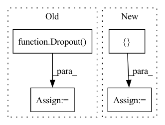

Pattern ID :34982

Before Change
self.leakiness = leakiness
self.norm_affine = norm_affine
self.lrelu_inplace = lrelu_inplace
self.dropout = Dropout(dropout_p)
self.in_0 = (
Norm(output_channels, affine=self.norm_affine, track_running_stats=True)
if Norm is not None
else nn.Identity()
After Change
if conv_kwargs is None:
conv_kwargs = {"kernel_size": 3, "stride": 1, "padding": 1, "bias": True}
if norm_kwargs is None:
norm_kwargs = {
"eps": 1e-5,
"affine": True,
"momentum": 0.1,
"track_running_stats": True,
}
if act_kwargs is None:
act_kwargs = {"negative_slope": 1e-2, "inplace": True}
if dropout_kwargs is None:
dropout_kwargs = {"p": 0.5, "inplace": True}
In pattern: SUPERPATTERN
Frequency: 5
Non-data size: 4
Instances
Fragment ID: 100066646
Project Name: mlcommons/gandlf
Commit Name: deb4b92b966201a12a94883ec1f79318a950385a
Time: 2021-06-18
Author: sid.cre8er@gmail.com
File Name: GANDLF/models/seg_modules/EncodingModule.py
M Class Name: EncodingModule
N Class Name: EncodingModule
M Method Name: __init__(12)
N Method Name: __init__(13)
M Parent Class: nn.Module
N Parent Class: nn.Module
M File Name: GANDLF/models/seg_modules/EncodingModule.py
N File Name: GANDLF/models/seg_modules/EncodingModule.py
M Start Line: 20
M End Line: 75
N Start Line: 22
N End Line: 50
'>
Before Change
self.compile(loss=torch.nn.CrossEntropyLoss(),
optimizer=optim.Adam(paras, lr=lr),
metrics=[Accuracy()])
self.dropout = Dropout(dropout)
self.layers = layers
def forward(self, x, nbrs):
After Change
bias=False):
super().__init__()
conv = []
conv.append(nn.Dropout(dropout))
for hid, act in zip(hids, acts):
conv.append(MedianConvolution(in_channels,
hid,
bias=bias))
conv.append(activations.get(act))
conv.append(nn.Dropout(dropout))
in_channels = hid
conv.append(MedianConvolution(in_channels, out_channels, bias=bias))
conv = Sequential(*conv)
self.conv = conv
self.compile(loss=nn.CrossEntropyLoss(),
optimizer=optim.Adam([dict(params=conv[1].parameters(),
weight_decay=weight_decay),
'>
Fragment ID: 100066640
Project Name: edisonleeeee/graphgallery
Commit Name: 4a0b252917d5068be1fc68f2752b58b6119c3a21
Time: 2021-02-09
Author: cnljt@outlook.com
File Name: graphgallery/nn/models/pytorch/median.py
M Class Name: MedianGCN
N Class Name: MedianGCN
M Method Name: __init__(9)
N Method Name: __init__(9)
M Parent Class: TorchKeras
N Parent Class: TorchKeras
M File Name: graphgallery/nn/models/pytorch/median.py
N File Name: graphgallery/nn/models/pytorch/median.py
M Start Line: 25
M End Line: 47
N Start Line: 21
N End Line: 33
'>
Before Change
self.compile(loss=torch.nn.CrossEntropyLoss(),
optimizer=optim.Adam(paras, lr=lr),
metrics=[Accuracy()])
self.dropout = Dropout(dropout)
self.layers = layers
def forward(self, x, nbrs):
After Change
bias=False):
super().__init__()
conv = []
conv.append(nn.Dropout(dropout))
for hid, act in zip(hids, acts):
conv.append(TrimmedConvolution(in_channels,
hid,
bias=bias,
tperc=tperc))
conv.append(activations.get(act))
conv.append(nn.Dropout(dropout))
in_channels = hid
conv.append(TrimmedConvolution(in_channels, out_channels,
bias=bias,
tperc=tperc))
conv = Sequential(*conv)
self.conv = conv
self.compile(loss=nn.CrossEntropyLoss(),
optimizer=optim.Adam([dict(params=conv[1].parameters(),
weight_decay=weight_decay),
'>
Fragment ID: 100066639
Project Name: edisonleeeee/graphgallery
Commit Name: 4a0b252917d5068be1fc68f2752b58b6119c3a21
Time: 2021-02-09
Author: cnljt@outlook.com
File Name: graphgallery/nn/models/pytorch/trimmed_gcn.py
M Class Name: TrimmedGCN
N Class Name: TrimmedGCN
M Method Name: __init__(10)
N Method Name: __init__(10)
M Parent Class: TorchKeras
N Parent Class: TorchKeras
M File Name: graphgallery/nn/models/pytorch/trimmed_gcn.py
N File Name: graphgallery/nn/models/pytorch/trimmed_gcn.py
M Start Line: 26
M End Line: 49
N Start Line: 22
N End Line: 37
'>
Before Change
layer = GraphConvolution(out_channels, use_bias=use_bias)
self.GNN_layers.append(layer)
self.dropout = Dropout(dropout)
self.compile(loss=SparseCategoricalCrossentropy(from_logits=True),
optimizer=Adam(lr=lr), metrics=["accuracy"])
self.metrics_fn = SparseCategoricalAccuracy()
After Change
for hid, activation, l2_norm in zip(hiddens, activations, l2_norms):
h = GraphConvolution(hid, use_bias=use_bias,
activation=activation,
kernel_regularizer=regularizers.l2(l2_norm))([h, adj])
h = Dropout(rate=dropout)(h)
h = GraphConvolution(out_channels, use_bias=use_bias)([h, adj])
h = Gather()([h, index])
super().__init__(inputs=[x, adj, index], outputs=h)
self.compile(loss=SparseCategoricalCrossentropy(from_logits=True),
'>
Fragment ID: 100066651
Project Name: edisonleeeee/graphgallery
Commit Name: 5097252beb74a704f014c9d3501c2ab489f9ba12
Time: 2020-09-30
Author: cnljt@outlook.com
File Name: graphgallery/nn/models/semisupervised/tf_models/gcn.py
M Class Name: GCN
N Class Name: GCN
M Method Name: __init__(10)
N Method Name: __init__(8)
M Parent Class: Model
N Parent Class: Model
M File Name: graphgallery/nn/models/semisupervised/tf_models/gcn.py
N File Name: graphgallery/nn/models/semisupervised/tf_models/gcn.py
M Start Line: 18
M End Line: 35
N Start Line: 13
N End Line: 35